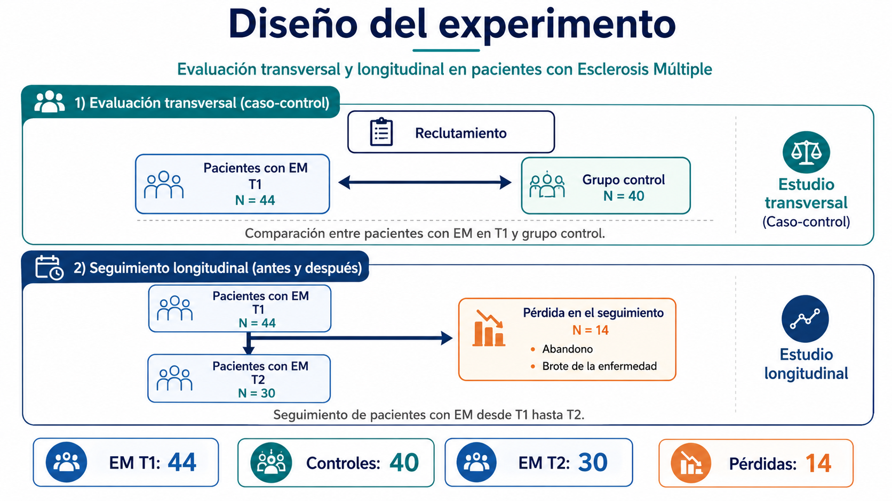
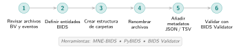

4 Diseño experimental y organización del pipeline
| Sección | Lectura | Estudio |
|---|---|---|
| Objetivos y diseño del estudio | 5 min | 5 min |
| BrainVision y organización BIDS | 8 min | 15 min |
| Metadatos técnicos del dataset | 7 min | 10 min |
| Visión global del pipeline NeuroMIND | 3 min | 5 min |
| Comparación de implementaciones del pipeline | 4 min | 5 min |
| Anexo del capítulo: mapa del código | 3 min | 5 min |
| Síntesis y preguntas para discutir | 3 min | 10 min |
| Dudas del proyecto | 11 min | 15 min |
| Capítulo completo | 44 min | 55 min |
Objetivos de aprendizaje
Objetivo del capítulo. Qué comparaciones hace el estudio (pacientes y controles, T1 y T2, ojos cerrados y abiertos) y qué camino sigue cada registro desde BrainVision hasta la conectividad.
La pregunta científica. Antes de aplicar un solo filtro: ¿qué contrastes puede responder este conjunto de registros, qué archivos lo forman y cómo se sabe que lo que entra al pipeline es exactamente lo que se grabó?
Al terminar este capítulo deberías ser capaz de:
- enunciar los tres contrastes del estudio (EM frente a control en T1, T1 frente a T2 y ojos cerrados frente a abiertos) y por qué solo los dos primeros son preguntas de investigación;
- distinguir el proyecto MINDEM, su muestra completa, de la submuestra NeuroMIND que se analiza, y no mezclar las cifras de una y otra;
- describir el tríptico BrainVision (
.vhdr,.vmrk,.eeg), los sidecars de BIDS y qué hace cada paso de la conversión; - distinguir el filtrado que lleva la señal desde la adquisición del que aplica NeuroMIND;
- leer el árbol del dataset (
data/bids/) y los metadatos que hereda cada registro; - situar cada fase del pipeline y saber en qué se diferencian BrainVision Analyzer, NeuroMIND y MNE-Python.
Conocimientos previos. El capítulo 3 (montaje, referencia FCz y tierra Gnd) y la idea de frecuencia de muestreo. Es un capítulo del núcleo del informe: de la pregunta del estudio al archivo que entra al pipeline.
Lecturas esenciales
Seis lecturas, en dos grupos (el diseño del estudio, y BIDS y reproducibilidad), cada uno de mayor a menor prioridad. La dificultad para ingeniería (de uno a tres, de menor a mayor) y los tiempos son los que da el informe original y son orientativos.
Pasa el cursor (o toca) sobre la cita para ver la referencia completa. Los tres niveles son los del informe: imprescindible, para profundizar y consulta.
El diseño del estudio
Imprescindible
Keil et al. (2014) · «Committee report: Publication guidelines and recommendations for studies using electroencephalography and magnetoencephalography» (artículo, Psychophysiology).
Recomendaciones de la comunidad sobre cómo diseñar y documentar un estudio EEG/MEG; funciona como lista de control del protocolo.
Leer: apartados sobre registro y sobre la información que debe publicarse.
- Tiempo ≈ 2 h
- Dificultad 1
- Sección Sección 4.1
- DOI 10.1111/psyp.12147
Para profundizar
Barry et al. (2007) · «EEG differences between eyes-closed and eyes-open resting conditions» (artículo, Clinical Neurophysiology).
Diferencias de potencia y topografía entre reposo con ojos cerrados y abiertos; justifica tratar EC y EO como condiciones separadas.
- Tiempo ≈ 1 h
- Dificultad 2
- Sección Sección 4.1
- DOI 10.1016/j.clinph.2007.07.028
Consulta
Yamada y Meng (2018) · Practical guide for clinical neurophysiologic testing: EEG (libro, Wolters Kluwer).
Detalles técnicos de colocación de electrodos, impedancias y registro.
- Tiempo a demanda
- Dificultad 1
- Sección Sección 3.7.1
- DOI sin DOI (libro; ISBN 9781496383020)
BIDS y reproducibilidad
Imprescindible
Gorgolewski et al. (2016) · «The brain imaging data structure, a format for organizing and describing outputs of neuroimaging experiments» (artículo, Scientific Data).
Artículo fundacional de BIDS: por qué estandarizar nombres de archivo y metadatos, y cómo hacerlo.
- Tiempo ≈ 1 h
- Dificultad 1
- Sección Sección 4.2
- DOI 10.1038/sdata.2016.44
Para profundizar
Pernet et al. (2019) · «EEG-BIDS, an extension to the brain imaging data structure for electroencephalography» (artículo, Scientific Data).
Extensión específica para EEG: canales, eventos, electrodos y metadatos del registro.
- Tiempo ≈ 1 h
- Dificultad 1
- Sección Sección 4.2
- DOI 10.1038/s41597-019-0104-8
Consulta
Pernet et al. (2020) · «Issues and recommendations from the OHBM COBIDAS MEEG committee for reproducible EEG and MEG research» (artículo, Nature Neuroscience).
Buenas prácticas de reproducibilidad en EEG/MEG: qué documentar de cada decisión del pipeline.
- Tiempo a demanda
- Dificultad 2
- Sección Sección 4.4
- DOI 10.1038/s41593-020-00709-0
4.1 Objetivos y diseño del estudio
El estudio evalúa el EEG de reposo en pacientes con esclerosis múltiple (EM) mediante tres contrastes: dos formulados como preguntas de investigación y uno de carácter fisiológico, que se resuelve dentro de cada sesión.
- Transversal (caso–control): compara a los pacientes con EM en la primera visita (T1) con el grupo control. Se define únicamente sobre T1.
- Longitudinal (T1–T2): sigue a los pacientes entre la evaluación basal (T1) y una segunda evaluación de seguimiento (T2), para estudiar si las medidas EEG se mantienen estables o cambian con el tiempo. Los controles no forman parte del seguimiento, de modo que este contraste se restringe al grupo clínico; además, no todos los pacientes de T1 completan T2 (por abandono o por brote de la enfermedad).
- Fisiológico (EC frente a EO): modulación entre reposo con ojos cerrados (EC) y con ojos abiertos (EO), que se desarrolla en la subsección siguiente.
Este diseño corresponde al proyecto MINDEM, cuya muestra completa de grupos, sesiones y pérdidas de seguimiento se resume en la figura 4.1. El presente trabajo, NeuroMIND, analiza una submuestra de MINDEM: los participantes incorporados al dataset BIDS, descritos en la tabla 4.1 a partir de participants.tsv y de la selección de grabaciones. Las cifras de la figura y las del cuadro no son, por tanto, intercambiables: la figura describe el reclutamiento original y el cuadro, los datos realmente analizados en los apartados siguientes.

Procedencia de esta imagen
El informe no documenta cómo se generó esta figura (no hay ficha de procedencia ni entrada en su anexo de figuras) ni su licencia: pendiente. Sus cifras (44, 40, 30 y 14) son las de la muestra completa de MINDEM, que no coinciden con las de la submuestra NeuroMIND de la tabla 4.1 (41 pacientes y 36 controles con EEG, y 28 pares T1–T2); véase también la duda COH-06.
participants.tsv y datos_clinicos_unificados.csv.
| Grupo | N | Demografía: edad | Demografía: F / M | Demografía: educ. | Clínica: EMRR / EMPP | Clínica: EDSS L/G | Clínica: D-FIS A/B | Clínica: clín. T2 | EEG utilizable T1 (EC / EO) | EEG utilizable T2 (EC / EO) | EEG utilizable T1+T2 (EC / EO) |
|---|---|---|---|---|---|---|---|---|---|---|---|
| EM / MS | 41 | 40.9 ± 10.3 (20–65) | 30 / 11 | 6 / 18 / 17 | 39 / 2 | 23 / 18 | 21 / 20 | 29 | 41 / 41 | 28 / 28 | 28 / 28 |
| Control / HC | 36 | 37.1 ± 14.5 (19–67) | 24 / 12 | 2 / 5 / 29 | — | — | — | — | 36 / 36 | 0 / 0 | — |
| Total | 77 | 39.1 ± 12.5 (19–67) | 54 / 23 | 8 / 23 / 46 | — | — | — | 29 | 77 / 77 | 28 / 28 | 28 / 28 |
participants.tsv, que fusiona la base clínica MIND-EM (28/09/2026) con las categorías del equipo clínico. En EM, 39 EMRR y 2 EMPP. La valoración de T2 incluye 29 pacientes, de los cuales 28 tienen EEG válido en T2.
| Variable | EM, T1 | EM, T2 | Control, T1 |
|---|---|---|---|
| EDSS | 3 [2–4.5] (41) | 2.5 [1.5–5] (29) | — |
| D-FIS | 19 [12–23] (41) | 13 [8–21] (29) | 2 [0–7] (36) |
| BDI-II | 17 [10–25] (41) | 11 [5–19] (29) | 6 [2–10] (36) |
La categoría D-FIS de la tabla 4.1 usa la mediana de todos los pacientes con T1 y es la que corresponde al contraste transversal. Para el longitudinal, el equipo clínico recalcula la mediana solo con los pacientes que tienen T1 y T2, de modo que un mismo paciente puede cambiar de categoría (por ejemplo, uno de los pacientes); ambas clasificaciones, junto con la respuesta de fatiga entre T1 y T2 (mayor o menor), están en participants.tsv y no deben mezclarse en una misma tabla de resultados. Las variables continuas de la tabla 4.2 permiten además correlacionar la conectividad con la fatiga y la discapacidad (COH-01).
El informe ilustra el cambio de categoría D-FIS entre las dos clasificaciones con el identificador de un paciente concreto. Un identificador unido a una clasificación clínica individual es un dato clínico individual, así que el libro no lo reproduce: se ha sustituido por «uno de los pacientes» (lo que consta en participants.tsv no se ha tocado). Pendiente de que el autor confirme si debe figurar. pendiente
Los recuentos y estadísticos de grupo de las dos tablas anteriores se recalcularon desde data/bids/participants.tsv el 2026-10-28 (solo agregados, ninguna fila individual): 77 participantes (41 EM y 36 controles); sexo, edad (media, desviación y rango), nivel educativo, diagnóstico (39 EMRR y 2 EMPP), categorías EDSS y D-FIS, y las medianas y rangos intercuartílicos de EDSS, D-FIS y BDI-II en T1 y T2 coinciden con las tablas. node tests/dataset_cap04.mjs repite el cálculo (si el dataset no está en el directorio padre, informa «NO PROBADO»). confirmado
4.1.1 Contraste ojos abiertos frente a ojos cerrados
Las dos condiciones de reposo, EC (eyes closed) y EO (eyes open), producen diferencias espectrales bien documentadas en la literatura (Cohen 2014; Yamada y Meng 2018):
- EC: sin entrada visual, la corteza occipital permanece en reposo relativo. Las redes talamocorticales sincronizan un ritmo alfa posterior (8–12 Hz) de alta amplitud, con máximo en electrodos como O1, O2 y Oz.
- EO: la estimulación visual activa la vía occipital y el ritmo alfa posterior disminuye o se suprime (bloqueo alfa); la actividad de reposo cede a oscilaciones de menor amplitud y mayor contenido de frecuencias más altas.

Procedencia de esta imagen
El informe no documenta cómo se generó esta ilustración (no hay ficha de procedencia ni entrada en su anexo de figuras) ni su licencia: pendiente. Es un esquema, sin datos.
La comparación EO/EC es uno de los contrastes más robustos y replicables en EEG de reposo. En el contexto de esclerosis múltiple, una alteración de la modulación EO/EC podría reflejar cambios en los procesos de inhibición y desinhibición visual.
4.2 BrainVision y organización BIDS
Los datos raw se cargan y se estandarizan en estructuras por sujeto y condición con metadatos validados. Esta fase fija etiquetas de canal, dimensiones y consistencia sujeto/condición antes de cualquier transformación de señal. Las señales originales se exportan desde el software comercial BrainVision Analyzer, y el procesamiento posterior se realiza en el lenguaje de programación Julia.
Sobre ese formato nativo se aplica el estándar abierto BIDS, Brain Imaging Data Structure, que se describe a continuación. BIDS como capa complementaria: no sustituye BrainVision ni altera la señal binaria, sino que conserva el tríptico de archivos .vhdr/.vmrk/.eeg y añade nombres uniformes y metadatos estandarizados (Gorgolewski et al. 2016), con trazabilidad e interoperabilidad. NeuroMIND construye un dataset BIDS-EEG completo en data/bids/, que el BIDS Validator da por válido sin errores (Sección 4.3); los originales se conservan intactos en data/sourcedata/.
BIDS (Brain Imaging Data Structure): estándar abierto para organizar y documentar datos de neuroimagen con una jerarquía de carpetas fija, nombres de archivo predecibles y metadatos en JSON/TSV legibles por máquina. Fue propuesto por Gorgolewski et al. (2016) para unificar la forma en que los laboratorios guardan y describen sus registros. Su adopción facilita compartir datos, validarlos automáticamente y reutilizarlos con distintas herramientas sin reinterpretar manualmente cada dataset.
Cada registro BrainVision se compone del mencionado tríptico de ficheros coordinados (figura 4.3).
![Esquema titulado «Formato BrainVision: tres archivos coordinados». Tres cajas naranjas, .vhdr, .vmrk y .eeg, cada una con su descripción: cabecera (frecuencia de muestreo, canales, resolución y archivos asociados); marcadores (instantes temporales, estímulos, respuestas y tipos de evento); señal cruda (datos binarios continuos, por ejemplo IEEE_FLOAT_32, normalmente multiplexados). Una flecha baja desde el archivo .eeg a una caja verde azulada: «BIDS conserva la señal cruda .eeg sin modificar y añade metadatos estructurados en .json y .tsv».](../assets/figures/cap04/bids_triplet.svg)
En la especificación BIDS-EEG el tríptico se mantiene y se añaden sidecars, es decir, ficheros auxiliares con el mismo nombre base y extensión .json o .tsv, sin modificar la señal principal. Por ejemplo, sub-01_task-eyesclosed_eeg.json acompaña a sub-01_task-eyesclosed_eeg.eeg y recoge, de forma legible por máquina, SamplingFrequency, PowerLineFrequency, referencia, tierra, número de canales y tipo de registro —campos que en el estudio proceden de la cabecera .vhdr. Como son idénticos en todos los registros de una tarea, NeuroMIND los escribe una sola vez por tarea en la raíz del dataset (task-eyesclosed_eeg.json y task-eyesopen_eeg.json) y cada registro los hereda por el principio de herencia de BIDS (Sección 4.3).
La revisión de las 212 cabeceras .vhdr originales reveló la misma plantilla de metadatos en todos los registros analizados. Tras aplicar las decisiones de selección de la hoja del equipo clínico y excluir los paradigmas que no son reposo, quedan 210 grabaciones válidas de 77 participantes: los tres raws únicos de M04, M05 y M06 en T1 se parten en dos (ojos abiertos y cerrados), por lo que 212 cabeceras, 3 particiones y 5 exclusiones dan 210 registros.
La cabecera declara codificación Codepage = UTF-8. La señal se almacena en BINARY, con muestras numéricas en coma flotante de 32 bits (IEEE_FLOAT_32) y orientación MULTIPLEXED: los valores de todos los canales de una misma muestra aparecen consecutivos antes de pasar al siguiente instante. La frecuencia de muestreo queda fijada por SamplingInterval = 2000 us (equivalente a SamplingFrequency = 500 Hz). El montaje comprende 31 canales EEG en sistema 10–20, con unidad µV y resolución interna BrainVision de 0.0488281\,\mu\text{V}.
UTF-8. Manera de guardar texto que admite acentos, eñes y signos de muchos idiomas. La cabecera avisa de que sus textos están escritos así.
IEEE_FLOAT_32. Cada muestra se guarda como un número con decimales, no como un entero. 32 bits es el tamaño habitual de ese número en un ordenador.
MULTIPLEXED. El fichero no va canal por canal. En cada instante anota el valor de todos los electrodos, uno detrás de otro, y luego pasa al instante siguiente.
Resolución de canal. Cada muestra del fichero .eeg guarda un valor digital d_c[n] (unidades ADC del conversor), no la amplitud en µV. El factor r_c del .vhdr convierte a amplitud física: V_c[n]=r_c\,d_c[n], con V_c[n] en µV. Aunque el binario use coma flotante de 32 bits, BrainVision no almacena directamente microvoltios: el escalado con r_c sigue siendo obligatorio. Con r_c=0.0488281\,\mu\text{V}, d_c[n]=100 equivale a 4.88281\,\mu\text{V}.
El registro se realizó con BrainVision Recorder Professional V. 1.21.0303 sobre un amplificador Brain Products actiCHamp Base Unit (5001) con módulo actiCHamp 32 CH Module (5010). La referencia queda en el canal REF (canal físico 2). Durante la adquisición, las impedancias guía fueron 10\,\mathrm{k}\Omega para nivel bueno y 50\,\mathrm{k}\Omega para nivel malo.
La cabecera .vhdr documenta dos cadenas de filtrado independientes. La tabla 4.3 separa esas etapas del preprocesado posterior de NeuroMIND.
| Nivel | Paso alto | Paso bajo | Rechazo estrecho |
|---|---|---|---|
| Amplificador actiCHamp | DC, sin corte explícito | 140 Hz | Notch desactivado |
| BrainVision Recorder | \tau=1.59155\,\mathrm{s} (\approx0.1\,\mathrm{Hz}) | 70 Hz | Notch 50 Hz |
| NeuroMIND | 0.5 Hz | 150 Hz | Notch 50 Hz + bandreject 100 Hz |
Esta separación debe conservarse al trasladar la cabecera a los campos HardwareFilters y SoftwareFilters del sidecar BIDS, sin fusionarlos en un bloque genérico de «filtros aplicados».
No confundir adquisición y preprocesado. El fichero .eeg ya incorpora el filtrado de BrainVision Recorder; atribuirlo después a NeuroMIND falsearía la procedencia de la señal raw. Los umbrales de impedancia 10/50 kΩ describen la política visual de QC de esa sesión, no una propiedad física permanente del amplificador.
El orden común de los 31 canales EEG activos en las cabeceras BrainVision y en los ficheros electrodes.tsv revisados es:
\begin{gathered} \mathrm{Fz},\mathrm{F3},\mathrm{F7},\mathrm{FT9},\mathrm{FC5},\mathrm{FC1}, \mathrm{C3},\mathrm{T7},\mathrm{TP9},\mathrm{CP5},\mathrm{CP1},\\ \mathrm{Pz},\mathrm{P3},\mathrm{P7},\mathrm{O1},\mathrm{Oz},\mathrm{O2}, \mathrm{P4},\mathrm{P8},\mathrm{TP10},\mathrm{CP6},\mathrm{CP2},\\ \mathrm{Cz},\mathrm{C4},\mathrm{T8},\mathrm{FT10},\mathrm{FC6},\mathrm{FC2}, \mathrm{F4},\mathrm{F8},\mathrm{Fp2}. \end{gathered}
4.2.1 Conversión BrainVision → BIDS
El flujo estándar de conversión BrainVision → BIDS consta de seis pasos (figura 4.4): revisar archivos BrainVision y eventos; definir entidades BIDS (sub, ses, task, run); crear carpetas; renombrar según BIDS; añadir metadatos JSON/TSV; validar con BIDS Validator. Herramientas como MNE-BIDS, PyBIDS y BIDS Validator ayudan en partes del proceso.
BIDS Validator. Comprueba nombres, carpetas y sidecars JSON/TSV frente a la especificación BIDS. NeuroMIND usa la versión 3.0.2 de línea de órdenes (bids-validator-deno data/bids), una herramienta externa que no figura en las dependencias de Julia. Documentación: bids-standard.github.io/bids-validator.

NeuroMIND recorre esos pasos con scripts propios (anexo del capítulo):
- Revisar.
scripts/audit_full_dataset.jlescanea los.vhdroriginales, normaliza las más de quince variantes ortográficas de la condición, aplica las decisiones de selección deconfig/raw_selection.csvy las reúne eninventory.csv. - Entidades. Del inventario salen
sub(con ceros iniciales:M5→M05),ses(T1oT2),task(eyesclosedoeyesopen, a partir de EC y EO) yrun-01. - Carpetas. La jerarquía estándar
sub-/ses-/eeg/dentro dedata/bids/(Sección 4.2.2). - Renombrar. El tríptico se copia con nombre BIDS y se reescriben sus enlaces internos; los originales de
data/sourcedata/brainvision/no se tocan. Los raws únicos de M04, M05 y M06 en T1 se parten antes de cualquier filtro en dos grabaciones independientes. - Metadatos.
scripts/build_bids_full.jlescribe los sidecars comunes de cada tarea y, por sesión,electrodes.tsvycoordsystem.json;participants.tsvsale de la auditoría. - Validar. Con BIDS Validator (versión 3.0.2) sobre
data/bids/: ningún error y cuatro avisos, justificados en elREADME.mddel dataset (Sección 4.3).
Renombrar el tríptico exige editar también los enlaces internos: dentro de .vhdr y .vmrk BrainVision guarda el nombre del compañero al que debe enlazar (DataFile= y MarkerFile= en el .vhdr; DataFile= en el .vmrk). Si solo se cambia el nombre en disco, la cabecera seguirá apuntando al nombre antiguo y el lector no encontrará la señal ni los marcadores. El estándar exige además que los tres ficheros compartan nombre base y residan en eeg/. El constructor reescribe esas claves y se ha comprobado, con MNE-Python, que la señal de los 210 registros es idéntica muestra a muestra a la original (incluidos los seis recortes). En los .vmrk originales, además, DataFile= guardaba un nombre con las iniciales del participante, distinto del del .vhdr; con el renombrado esa información desaparece de los nombres de fichero.
Por ejemplo, el registro original M5_T2_<iniciales>_<fecha>_OJOS CERRADOS.vhdr pasa a ser sub-M05_ses-T2_task-eyesclosed_run-01_eeg.vhdr.
Que el BIDS Validator 3.0.2 dé «ningún error y cuatro avisos», y que la señal de los 210 registros sea idéntica a la original (comprobada en el informe con MNE-Python), son comprobaciones del informe que este libro no ha repetido: en este equipo solo está instalado bids-validator 1.15.0, una versión distinta cuyo resultado no sería equivalente. Lo que sí se ha recalculado es la estructura del dataset (Sección 4.2.2). pendiente
4.2.2 Estructura del dataset en la configuración actual
La especificación BIDS-EEG exige un directorio raíz con dataset_description.json, participants.tsv y una jerarquía por sujeto, sesión y modalidad EEG; electrodes.tsv y coordsystem.json son opcionales, pero recomendables cuando se dispone de coordenadas. NeuroMIND incluye todos ellos en data/bids/ (figura 4.5): 77 sujetos (41 pacientes y 36 controles), 105 sesiones (T1 de los 77 participantes y T2 de 28 pacientes) y 210 grabaciones, 105 en ojos cerrados y 105 en ojos abiertos.
![Árbol de carpetas de data/bids/. En la raíz: README.md, dataset_description.json, participants.tsv (24 columnas), participants.json, task-TAREA_eeg.json (sidecar común de la tarea) y task-TAREA_channels.tsv. Debajo, sub-ID/ (77 sujetos), con ses-SESIÓN/ (T1: 77, T2: 28 pacientes) y eeg/, que contiene sub-ID_ses-SESIÓN_electrodes.tsv, sub-ID_ses-SESIÓN_coordsystem.json, sub-ID_ses-SESIÓN_task-TAREA_run-01_eeg con extensiones vhdr, vmrk y eeg y, en gris, sub-ID_ses-T1_task-TAREA_run-01_eeg.json (solo los 6 registros recortados).](../assets/figures/cap04/bids_folder_tree.svg)
data/bids/ en la configuración actual del proyecto. <id> es el código con ceros iniciales (M05, MC09), <s> la sesión (T1 o T2) y <t> la tarea (eyesclosed o eyesopen); cada sesión contiene una grabación por tarea. En gris, el sidecar propio que solo tienen los seis registros recortados de M04, M05 y M06 en T1. Figura TikZ propia del informe original.
El dataset no se edita a mano: scripts/audit_full_dataset.jl escribe participants.tsv y scripts/build_bids_full.jl el resto, ambos a partir de data/sourcedata/ y de las decisiones de config/raw_selection.csv. Su contenido es:
- la raíz, con
dataset_description.json,README.md,participants.tsv(con las variables clínicas) yparticipants.json, más los sidecars comunes de cada tarea (task-*_eeg.jsonytask-*_channels.tsv); sub-<id>/ses-<sesión>/eeg/: el tríptico renombrado de cada registro, elelectrodes.tsvy elcoordsystem.jsonde la sesión y, solo en los seis registros recortados, un sidecar propio con la ventana de corte.
La señal original permanece intacta en data/sourcedata/brainvision/; el inventario data/tables/inventory.csv enlaza cada registro con su archivo de origen y con el motivo de cada exclusión, y el resto de las tablas propias del proyecto se recogen en la tabla 4.5. Como participants.tsv contiene datos personales de salud (fechas de nacimiento e inclusión, escalas clínicas), el dataset no debe compartirse ni publicarse sin retirar esas columnas. Los ficheros de coordenadas se tratan en el Sección 4.3.2. La figura 4.6 resume cómo se construye el dataset a partir de la señal original.
![Diagrama de flujo de izquierda a derecha. Tres cajas de entrada naranjas: los 212 archivos .vhdr/.vmrk/.eeg originales, raw_selection.csv (decisiones del equipo clínico) y la base clínica MIND-EM (EDSS, D-FIS, BDI-II). Las dos últimas y los originales alimentan audit_full_dataset.jl (inventario y participantes), que produce inventory.csv hacia build_bids_full.jl (recorte de 6 raws, renombrado y enlaces, sidecars) y participants.tsv hacia data/bids/ (77 sujetos, 210 grabaciones). Los originales llegan también a build_bids_full.jl como señal original sin modificar. El resultado pasa a BIDS Validator: 0 errores, 4 avisos.](../assets/figures/cap04/bids_brainvision.svg)
data/bids/ desde la señal BrainVision original. La auditoría reúne los registros, las decisiones de selección y la base clínica en inventory.csv y participants.tsv; el constructor recorta los seis raws únicos de T1, renombra el tríptico, reescribe sus enlaces internos (DataFile y MarkerFile, Sección 4.2.2) y escribe los sidecars; el resultado se valida con BIDS Validator. Figura TikZ propia del informe original.
Usa ceros iniciales (M5 → sub-M05) y la jerarquía sub-<id>/ses-<label>/eeg/. Las entidades sub-, ses-, task- y run- van en minúsculas; los nombres, en ASCII y sin espacios. En este estudio: task-eyesclosed y task-eyesopen.
La estructura descrita se recontó en data/bids/ el 2026-10-28 (solo recuentos de archivos y carpetas): 77 sujetos (41 MS y 36 HC), 105 sesiones (77 T1 y 28 T2), 210 registros .vhdr, .vmrk y .eeg (105 de ojos cerrados y 105 de ojos abiertos), 105 electrodes.tsv y 105 coordsystem.json, seis sidecars propios de registro (los recortados), los ocho archivos de la raíz que describe el capítulo y 24 columnas en participants.tsv. inventory.csv tiene 215 filas, de ellas 5 excluidas; raw_selection.csv, 15 decisiones. Todo coincide con el texto. confirmado
4.3 Metadatos técnicos del dataset
Junto a la señal, el dataset incluye ficheros de metadatos en dos formatos de texto plano: .json (JavaScript Object Notation), que guarda pares clave–valor legibles por máquina, y .tsv (tab-separated values), una tabla con una fila por entidad y las columnas separadas por tabuladores. La tabla 4.4 reúne los de señal y metadatos, indica el nivel del dataset al que pertenece cada uno y distingue los que define el estándar BIDS-EEG de los que NeuroMIND genera, que incluyen todos los obligatorios; no se generan events.tsv ni scans.tsv. La tabla 4.5 recoge aparte las tablas propias del proyecto, que no forman parte del estándar. La validación con BIDS Validator (versión 3.0.2) no da ningún error; los cuatro avisos que quedan (un solo autor, claves recomendadas ausentes como HEDVersion o Instructions, y la falta de events.tsv en una tarea de reposo) están justificados en el README.md del propio dataset.
* sustituye al nombre base del registro (sub-<id>_ses-<sesión>_task-<tarea>_run-01).
| Fichero | Nivel | Contenido | En NeuroMIND |
|---|---|---|---|
| Señal BrainVision (tríptico de la figura 4.3) | |||
*.eeg |
registro | Señal en binario (IEEE_FLOAT_32, MULTIPLEXED). |
Sí. Copia con nombre BIDS; en los seis registros recortados, solo las muestras de la ventana. |
*.vhdr |
registro | Cabecera de texto: frecuencia de muestreo, canales, resolución, filtros y enlaces a .eeg y .vmrk. |
Sí. Copia con DataFile y MarkerFile reescritos; el cargador nativo lee .vhdr y .eeg. |
*.vmrk |
registro | Marcadores de eventos, en texto. | Sí. Copia con DataFile reescrito; el cargador no lo lee. |
| Metadatos del dataset | |||
dataset_description.json |
raíz | Nombre, versión de BIDS, licencia, autoría y descripción del dataset. | Sí, junto con un README.md. |
participants.tsv y participants.json |
raíz | Una fila por participante con 24 columnas: identificación, grupo, sexo, edad, fecha de nacimiento, nivel educativo, disponibilidad de T1 y T2, fechas de inclusión, diagnóstico, tratamiento, EDSS, D-FIS, BDI-II y las categorías clínicas. El JSON describe cada columna. | Sí. La auditoría los fusiona desde la base clínica y la hoja del equipo clínico. |
| Metadatos por registro, sujeto y sesión | |||
*_eeg.json |
tarea (raíz) y registro | Sidecar: frecuencia de muestreo, frecuencia de red, referencia (FCz), tierra (electrodo Gnd), equipo, filtros de hardware y de software y número de canales. | Sí. Uno por tarea en la raíz, heredado por todos los registros, y uno propio en los seis recortados, con la ventana de corte (SourceWindow). |
*_electrodes.tsv |
sujeto y sesión | Nombre y coordenadas x, y, z de cada electrodo. |
Sí, en el eeg/ de cada sesión. |
*_channels.tsv |
tarea (raíz) | Nombre, tipo, unidad, frecuencia de muestreo y referencia de cada canal. | Sí. Uno por tarea en la raíz, heredado. |
*_coordsystem.json |
sujeto y sesión | Sistema de coordenadas y unidades de electrodes.tsv. |
Sí; el sistema se declara como Other (Sección 4.3.2). |
*_events.tsv, *_scans.tsv |
registro y sesión | Eventos de la tarea y lista de registros de la sesión, con su fecha. | No. El reposo no tiene eventos y el validador lo avisa sin considerarlo un error. |
config/.
| Fichero | Ubicación | Contenido | Origen y uso |
|---|---|---|---|
inventory.csv |
data/tables/ |
Una fila por grabación (215 filas: 210 utilizables y 5 excluidas): identificadores, sesión, condición (EC, EO u oddball), ruta relativa al fichero de origen, ventana temporal (tmin_s, tmax_s), si está excluida y el motivo. |
Lo genera la auditoría. Es el registro único del que los análisis de grupo calculan cohorte y pares T1–T2. |
raw_selection.csv |
config/ |
Decisiones sobre qué archivo raw entra (usar, descartar, excluir) o cómo se recorta (segment, con tmin y tmax), con su motivo y su fuente: 15 filas sobre 12 archivos (M04, M05, M06, M07, M16, M31 y M37). |
Versionado, sin iniciales ni fechas de grabación. Lo lee la auditoría. |
datos_clinicos_unificados.xlsx y .csv |
data/sourcedata/clinical/ |
Una fila por participante con los valores numéricos de EDSS, D-FIS y BDI-II en T1 y T2, las categorías del equipo clínico y el EEG utilizable por sesión y condición, con los tramos recortados. El libro añade las hojas de grabaciones, control de calidad y diccionario; no incluye la fecha de nacimiento. | Lo genera scripts/build_clinical_master.jl. Es el documento que se comparte con el equipo clínico para revisar los datos. |
| Plantillas BIDS | config/bids/ |
Plantillas de dataset_description.json, participants.json, sidecar de tarea y coordsystem.json, más el montaje de 31 canales del gorro ECI. |
Versionadas. Las usa scripts/build_bids_full.jl para escribir los metadatos. |
4.3.1 Metadatos por registro
Los metadatos comunes (equipo, referencia, tierra, filtros y frecuencia de muestreo) están en dos ficheros de la raíz, uno por tarea, y cada registro los hereda; así no hay 210 copias de la misma información. Solo los seis registros recortados de M04, M05 y M06 en T1 tienen un *_eeg.json propio, con la ventana SourceWindow (segundos y muestras de corte sobre el raw original). El corte se hace antes de cualquier filtro, con intervalos semiabiertos [t_\mathrm{min}, t_\mathrm{max}) para que la muestra de la transición pertenezca a un único segmento (ADQ-06, PRE-03); el cargador no aplica ninguna ventana, porque lee el registro ya recortado. En ningún fichero se guardan rutas absolutas, por lo que el dataset es portable entre equipos. La carga se describe en la Sección 4.4.
4.3.2 Coordenadas de electrodos
Cada sujeto y sesión tiene un *_electrodes.tsv con las columnas name, x, y y z. Las coordenadas expresan la posición del electrodo en un sistema de cabeza normalizado; el montaje de referencia completo figura en la tabla de coordenadas de electrodos del anexo del informe (no incorporada aún al libro).
_load_electrode_positions. Construye el diccionario de posiciones, compartido por load_single_subject y el resto de rutas de carga. El TSV solo contiene los 31 electrodos registrados: la referencia (FCz) y la tierra (electrodo Gnd frontal del gorro ECI, no una posición 10–20) se declaran en el sidecar, y la fila Fpz de tierra que traía la plantilla anterior se ha retirado por incorrecta (Sección 3.7.2).
El sistema 10–20 da la correspondencia nominal entre etiqueta y región del cuero cabelludo (tabla 3.3), pero no las coordenadas: estas no deben inferirse de la infografía, sino leerse de los *_electrodes.tsv o de ese cuadro. El origen de las coordenadas no está documentado en los ficheros de partida, por lo que el *_coordsystem.json declara el sistema como Other, con unidades n/a. Si se confirma el sistema de coordenadas exacto, deberá actualizarse ahí junto con sus unidades y origen.
Sistemas de coordenadas EEG. Nativo del fabricante: marco de referencia del propio software o montaje (p. ej. Brain Products). Plantilla normalizada: cabeza estándar (p. ej. Colin27 o fsaverage) a la que se proyectan electrodos para comparar posiciones entre sujetos. Espacio MNI: coordenadas en milímetros respecto a un origen anatómico común (línea comisura anterior–posterior), habitual al integrar EEG con MRI o atlas cerebrales.
4.3.3 Comprobaciones de coherencia
Estos ficheros se revisan en las primeras fases del pipeline. La comprobación verifica la coherencia entre:
- Nombres de canal: deben coincidir exactamente entre el
.vhdr, elchannels.tsvy la columnanamedelelectrodes.tsv. El constructor del dataset comprueba que las 210 cabeceras tienen los mismos 31 canales en el mismo orden (el último es Fp2) y se detiene si alguna difiere (la validación de la localización está en la Sección 3.7.1). - Montaje: el
electrodes.tsvfrente al montaje documentado (tabla 3.3 y la tabla de coordenadas del anexo del informe). - Parámetros de registro: frecuencia de muestreo y número de canales del sidecar frente a la cabecera
.vhdr. - Participantes: identificadores y variables demográficas de
participants.tsv, frente a los registros disponibles.
Con la información disponible, el estado documentado es un dataset BIDS-EEG validado, preparado para la carga de datos en el pipeline de análisis y para la comprobación de coherencia entre señal, metadatos y electrodos. La participants.tsv regenerada incluye 77 participantes (41 EM y 36 controles); la auditoría señala además tres discrepancias de edad entre fuentes (M13, M29 y M35) que quedan por confirmar con el equipo clínico.
4.4 Visión global del pipeline NeuroMIND
4.4.1 Fases de procesamiento
El preprocesado EEG del proyecto NeuroMIND se organiza como una cadena secuencial en la que cada etapa prepara un supuesto concreto requerido por la siguiente. El orden de trabajo es el siguiente: ingestión de datos y controles de calidad, filtrado determinista, descomposición y limpieza por ICA, normalización por segmentos, rechazo de artefactos y, por último, caracterización espectral de la señal ya depurada.
La ruta operativa puede leerse en tres bloques contiguos (tabla 4.6):
| Fase | Configuración actual | Salida o control |
|---|---|---|
| Bloque 1 — Armonización y limpieza | ||
| Carga BIDS | BrainVision .vhdr/.eeg; f_s=500\,\mathrm{Hz}; 31 canales 10–20. |
Objeto EEGRecording; señal canales\timesmuestras; metadatos. |
| QC raw | Desviación estándar por canal; z-score de amplitud; alerta si \bar\sigma>20\,\mu\text{V}. | qc_summary.csv; channel_statistics.csv. |
| Filtrado | Notch 50 Hz; bandreject 100 Hz; high-pass 0.5 Hz; low-pass 150 Hz. | Señal filtrada; PSD/respuesta de filtro para auditoría. |
| ICA | FastICA simétrico sobre señal continua filtrada. | ica_summary.json; features por componente; EEG reconstruido limpio. |
| Bloque 2 — Señal por segmentos | ||
| Segmentación | épocas de x s; solapamiento 0; baseline 0–0.1 s; rechazo \pm70\,\mu\text{V}. | Tensor de épocas válidas; segments_table.csv; resumen de rechazo. |
| Bloque 3 — Caracterización espectral | ||
| PSD | Ventana Hamming; FFT de 1024 puntos; integración por bandas. | band_power_summary.csv; figuras espectrales/topográficas. |
Contrastadas con config/pipeline.toml (commit 765f725 del repositorio de NeuroMIND), las dos tablas de este capítulo que describen el pipeline no coinciden entre sí ni, en parte, con la configuración activa:
- Longitud de época. La tabla 4.6 deja «épocas de x s» sin completar. La configuración fija 1,0 s sin solapamiento (
segment_length_seconds = 1.0,overlap_seconds = 0.0). - FFT. La tabla 4.6 dice 1024 puntos y la tabla 4.7, para NeuroMIND, «NFFT = 512» con Δf ≈ 0,977 Hz.
[spectral] nfft = 1024, y el propio archivo indica que se aplicamax(nfft, n_samp), es decir, 1024 puntos con relleno de ceros y 0,488 Hz por bin. Las dos tablas son, pues, incompatibles; rige la configuración. - Baseline. La tabla 4.6 dice «baseline 0–0.1 s» y la tabla 4.7, para NeuroMIND, «media del segmento completo (equivalente funcional)» con una sola corrección previa al rechazo.
[baseline]tienemethod = "first_window_mean"(media de los primeros 0,10 s) yn_passes = 2(antes y después del rechazo), lo que se parece más a la columna de BVA. El propio archivo añade que el lote MINDEM-IMIBIC ya procesado (205 resultados) se ejecutó conmethod = "mean"(media de toda la época), de modo que cambiar el valor activo no reproduciría esos resultados. Qué configuración produjo cada resultado concreto debe leerse en suconfig_snapshot.toml.
No se corrige ninguna tabla del informe: la discrepancia se documenta. confirmado
4.4.2 Persistencia y reproducibilidad
Desde el punto de vista de la implementación en Julia, el flujo se ejecuta como fases modulares con persistencia explícita entre pasos. Los resultados intermedios se serializan para que cualquier fase pueda relanzarse sin recomputar toda la cadena, algo esencial para depuración y análisis de sensibilidad. Si un control de calidad falla, el relanzamiento debe empezar desde la fase local correspondiente.
4.5 Comparación de implementaciones del pipeline
Los mismos registros se procesan con tres implementaciones independientes que se contrastan entre sí. BrainVision Analyzer (BVA, versión 2.3.0) es el flujo de referencia: Javier Espuny lo aplica de forma interactiva, con selección visual de componentes. NeuroMIND, escrito en Julia, automatiza una cadena equivalente, con diferencias deliberadas en la ICA, y deja cada paso trazado por sujeto y sesión; es el pipeline que describe este informe. MNE-Python, en el subproyecto mne_brain, lo replica fase a fase en el ecosistema Python como validación cruzada, aunque sus parámetros etapa por etapa todavía no se han volcado a la comparación y su columna figura como «Pendiente». La tabla 4.7 resume los parámetros de cada etapa, con el fin de documentar tanto las equivalencias como las divergencias deliberadas entre las rutas y de poder reproducir o auditar cualquier paso desde su fuente.
Antes de contrastar los pipelines conviene fijar la banda efectiva que llega al fichero .eeg. El amplificador actiCHamp limita el espectro a 0–140 Hz y BrainVision Recorder aplica, antes de escribir la señal, un paso alto a 0,1 Hz, un notch a 50 Hz y un paso bajo a 70 Hz (véase la caja de trazabilidad anterior). La figura 4.7 resume esa cadena y la contrasta con los filtros previstos en NeuroMIND: solo el paso alto a 0,5 Hz aporta algo nuevo respecto a lo ya aplicado en la adquisición, mientras que el notch, el bandreject a 100 Hz y el paso bajo a 150 Hz son redundantes o inoperantes sobre una señal ya acotada a 70 Hz. BVA parte de esos mismos ficheros y vuelve a aplicar su propia cascada analítica, que la tabla siguiente detalla junto con las de NeuroMIND y MNE-Python.
![Tres bloques horizontales. Hardware (amplificador actiCHamp): paso alto DC y paso bajo 140 Hz, con una barra de banda efectiva de 0 a 140 Hz. Software (BrainVision Recorder): paso alto 0,1 Hz, notch 50 Hz y paso bajo 70 Hz, con una barra de 0,1 a 70 Hz y trazos discontinuos hasta 140 Hz. Análisis NeuroMIND: paso alto 0,5 Hz marcado como aporte útil; notch 50 Hz marcado como redundante; bandreject 100 Hz, «corte 70 Hz»; paso bajo 150 Hz, «filtro previo 70 Hz». Una última barra va de 0 a 70 Hz con marcas en 0,1, 0,5 y 50 Hz.](../assets/figures/cap04/filter_brainvision_neuromind.svg)
BVA frente a NeuroMIND. BVA usa Extended Infomax con esferización probabilística y selección visual de componentes; NeuroMIND, FastICA simétrico con esferización clásica y puntuación automática. Filtrado, segmentación de 1 s y FFT (Hamming 10 %, varianza corregida, NFFT 512) son equivalentes.
| Etapa | BVA — Javier Espuny | NeuroMIND — Julia | MNE Python |
|---|---|---|---|
| Raw Data | 31 canales, F_s=500 Hz, 100,36 s, 50 180 pts. Referencia FCz, tierra Gnd frontal (ECI). | Ídem (mismos ficheros BrainVision cargados vía BrainCore.jl). |
Pendiente. |
| Notch | IIR Butterworth, zero phase shift, 50 Hz. | IIR Butterworth, causal (filt), orden 4, 50 Hz. |
Pendiente. |
| Band-reject | 100 Hz, ancho 1 Hz, orden 4, IIR. | 100 Hz, ancho 1 Hz, orden 4, IIR, causal. | Pendiente. |
| High-pass | IIR Butterworth, zero phase shift, orden 8, 0.5 Hz. | IIR Butterworth, filtfilt (fase cero), orden diseño 4 (efectivo 8), 0.5 Hz. |
Pendiente. |
| Low-pass | IIR Butterworth, zero phase shift, orden 8, 150 Hz. | IIR Butterworth, filtfilt (fase cero), orden diseño 4 (efectivo 8), 150 Hz. |
Pendiente. |
| ICA | Probabilistic sphering. Extended Infomax (gradient), 512 pasos, convergencia <10^{-7}. 31 componentes; 8 rechazados manualmente (F00, F01, F03, F06, F12, F19, F24, F27); convergido en 453 pasos (4 reinicios), última mod. 8.87\times10^{-8}. | Classic sphering (\mathbf{S}_\mathrm{sph}=\mathbf{D}^{-1/2}\mathbf{V}^\top). FastICA simétrico, semilla fija, tol=10^{-7}, máx. 512 iter. 31 componentes; rechazo automático (artifact_score$>$1.5). |
Pendiente. |
| Segmentación | 1 s, sin solapamiento, sin omitir malos. | 1 s, sin solapamiento. | Pendiente. |
| Baseline 1 | Corrección 0–100 ms (antes del rechazo). | Substracción de la media del segmento completo (equivalente funcional). | Pendiente. |
| Rechazo artefactos | Amplitud \pm 70\,\mu\text{V}, 30 canales, semiautomático. 100 segmentos retenidos / 0 eliminados. | Amplitud \pm 70\,\mu\text{V} + z-score entre épocas; clasificación automática por canal. | Pendiente. |
| Baseline 2 | Segunda corrección 0–100 ms (post-rechazo). | — (única corrección, previa al rechazo). | Pendiente. |
| FFT | Hamming 10 %, varianza corregida, Periodic. Power [\mu\text{V}^2], Full Spectrum, Non-Complex. \Delta f=0.976 Hz; zero-padding a 512 pts (de 500). | Hamming 10 %, varianza corregida. Power [\mu\text{V}^2], Full Spectrum. \Delta f\approx0.977 Hz, NFFT = 512 pts. | Pendiente. |
| Promediado espectral | Media aritmética sobre 100 segmentos por canal. Subnodo SD + SNR (Avg/SD). Tabla [Canal, Segs, SNR]. |
Media aritmética de la PSD por canal sobre todas las épocas válidas. SD y SNR en ica_summary.json. |
Pendiente. |
Las cifras de la columna de BVA (100,36 s, 50 180 puntos, 100 segmentos retenidos, 8 componentes rechazados, 453 pasos de convergencia) corresponden a una ejecución con un registro que el informe no identifica; el capítulo tampoco dice qué sesión ni qué condición era. Se transcriben tal cual. Sí se puede comprobar su coherencia interna: 50 180 puntos a 500 Hz son 100,36 s, y 500/512 = 0,9766 Hz, que BVA da como 0.976 y la columna de NeuroMIND como 0.977 (solo difiere el redondeo). No son resultados de cohorte y no deben leerse como tales. pendiente
Anexo del capítulo: mapa del código
Antes del pipeline hay cuatro scripts: uno inventaría los registros y fusiona los datos clínicos, otro construye el dataset BIDS, el tercero reúne los datos clínicos y la selección de grabaciones en el documento que se comparte con el equipo clínico, y el cuarto lanza el pipeline sobre todos los registros.
De los datos originales al lote, en una línea.
-
data/sourcedata/(originales) -
audit_full_dataset.jl→inventory.csv -
build_bids_full.jl→data/bids/ -
run_batch_pipeline.jl→results/
La rama A es el árbol de llamadas de cada script (qué función llama a cuál); la B, los archivos que dejan en data/ y results/. Los nombres de scripts y funciones de la rama A se han comprobado contra el repositorio de NeuroMIND (tests/mapa_codigo.mjs, commit 765f725); la rama B es la que describe el informe (verificada allí el 2026-10-15) y este libro no incluye ningún archivo de data/ ni de results/. Ningún script se ejecuta al construir el libro.
A · Llamadas de los cuatro scripts
-
scripts/-
audit_full_dataset.jl-
main-
parse_vhdr_filename→normalize_condition— EC, EO, ODDBALL -
load_raw_selection—raw_selection.csv: use, segment, discard, exclude -
is_excluded·load_demographics·_bids_subject_id -
write_participants— fusiona clínica, categorías y demografía-
load_clinical·load_javier
-
-
-
-
build_bids_full.jl-
main-
load_inventory·read_vhdr— mismos 31 canales en todas las cabeceras -
write_dataset_files— raíz: descripción, README y sidecars de tarea -
write_recording— copia o recorte, renombrado y enlaces-
parse_markers·marker_line·shift_bv_date—.vmrkdel recorte
-
-
write_crop_sidecar—SourceWindow -
write_session_files—electrodes.tsvycoordsystem.json -
sweep_stale!— lo obsoleto, adata/_archive
-
-
-
build_clinical_master.jl-
main-
build_rows-
read_participants·read_inventory·read_javier_notes -
quality_checks— categorías frente a valores
-
-
recording_rows·readme_rows -
write_csv·write_xlsx
-
-
-
run_batch_pipeline.jl-
run_batch-
load_jobs·already_done— filtros–subject,–skip-done… -
write_temp_config— un TOML temporal por trabajo -
_run_pipeline_quiet-
run_single_subject_pipeline— pasos 1–8 (caps. 5–14 del informe original)
-
-
print_batch_dashboard— progreso y ETA
-
-
-
B · Salidas
-
data/-
tables/inventory.csv— audit: un.vhdrpor fila, contmin_sytmax_s -
bids/-
participants.tsv— audit -
dataset_description.json·README.md·participants.json— build, desde las plantillas deconfig/bids/ -
task-*_eeg.json·task-*_channels.tsv— build -
sub-/ses-/eeg/-
*_task-*_run-01_eeg.{vhdr,vmrk,eeg}— build:write_recording -
*_task-*_run-01_eeg.json— build: solo los 6 recortados -
*_electrodes.tsv·*_coordsystem.json— build:write_session_files
-
-
-
sourcedata/clinical/datos_clinicos_unificados.{xlsx,csv}— master -
_archive/bids_descartados/— build:sweep_stale!
-
-
results/-
logs/batch_run_{fecha}.csv— run_batch: OK, SKIP o ERR por trabajo -
subjects/…— lo que escribe cada registro (caps. 5–14 del informe original)
-
Ruta de lectura.
scripts/audit_full_dataset.jl, funciónmain: cómo se interpreta el nombre de cada.vhdr(parse_vhdr_filename,normalize_condition), qué decisiones deconfig/raw_selection.csvse aplican (load_raw_selection) y cómo se fusionan los datos clínicos enparticipants.tsv(write_participants).scripts/build_bids_full.jl, funciónmain: cómo se comprueba que todas las cabeceras comparten canales (read_vhdr), cómo se copia o se recorta cada registro (write_recording) y qué sidecars se escriben (write_dataset_files,write_crop_sidecar,write_session_files).scripts/build_clinical_master.jl, funciónmain: fusión de participantes, inventario y observaciones del equipo clínico (build_rows), comprobaciones de coherencia (quality_checks) y escritura del libro y del CSV.scripts/run_batch_pipeline.jl, funciónrun_batch: filtros de la línea de comandos,--skip-done(already_done) y un TOML temporal por trabajo (write_temp_config).results/logs/batch_run_{fecha}.csv: estado OK, SKIP o ERR de cada registro en cada lanzamiento.
Para ejecutarlo. julia --project=. scripts/run_batch_pipeline.jl --dry-run muestra el plan sin ejecutarlo; --skip-done reanuda un lote interrumpido.
4.6 Síntesis y preguntas para discutir
Lo que hay que llevarse del capítulo
- El estudio hace tres contrastes: EM frente a control en T1 (transversal), T1 frente a T2 en pacientes (longitudinal) y ojos cerrados frente a abiertos (fisiológico, dentro de cada sesión).
- MINDEM es la muestra completa; NeuroMIND analiza una submuestra: 77 participantes (41 EM y 36 controles), 105 sesiones y 210 grabaciones. Las cifras de una no son las de la otra.
- BIDS no altera la señal: conserva el tríptico BrainVision y añade nombres y metadatos. Los originales no se tocan, y los seis registros recortados se cortan antes de cualquier filtro.
- El
.eegya está filtrado por BrainVision Recorder (0,1–70 Hz): de los filtros de NeuroMIND, solo el paso alto de 0,5 Hz aporta algo nuevo. - Las tablas del capítulo que describen el pipeline no coinciden del todo con
config/pipeline.toml(época, FFT, baseline); manda la configuración y cada resultado lleva suconfig_snapshot.toml.
Pregunta de comprensión ¿Por qué no se pueden mezclar en una misma tabla las cifras de la figura 4.1 y las de la tabla 4.1?
Porque describen muestras distintas. La figura resume el reclutamiento de MINDEM (44 pacientes y 40 controles en T1, 30 pacientes en T2), mientras que la tabla cuenta a quienes tienen registros en el dataset BIDS de NeuroMIND (41 pacientes y 36 controles, y 28 pares T1–T2 con EEG utilizable). La diferencia viene de la selección de grabaciones y de que no todos los participantes tienen EEG válido. interpretación
Pregunta de comprensión Si el notch de 50 Hz y el paso bajo de 150 Hz de NeuroMIND se aplican, ¿por qué el capítulo los llama «redundantes o inoperantes»?
Porque la señal que llega al pipeline ya pasó por el filtrado de BrainVision Recorder, que limita la banda almacenada entre 0,1 y 70 Hz y aplica un notch a 50 Hz. Un paso bajo a 150 Hz no puede quitar nada por encima de 70 Hz, que ya no está, y el notch repite lo que ya se hizo. Aun así se aplican: lo que cuenta es que el .eeg ya incorpora el filtrado de la adquisición, y atribuirlo a NeuroMIND falsearía la procedencia de la señal. interpretación
Qué sigue abierto
Las preguntas siguientes no tienen una respuesta establecida en el informe ni en este libro. Para cada una se indica qué evidencia haría falta; no se ofrece una respuesta.
El capítulo da dos descripciones incompatibles de NeuroMIND y la configuración activa difiere de la que, según su propio archivo, ejecutó el lote ya procesado. pendiente
Qué evidencia haría falta: el config_snapshot.toml de cada registro (el pipeline lo guarda) y una tabla que lo resuma por lote.
Es la duda COH-06, aún abierta: la figura del diseño habla de 30 pacientes en T2 y el dataset tiene 28 con EEG utilizable en las dos sesiones. pendiente
Qué evidencia haría falta: una decisión del equipo sobre la intersección base clínica ∩ documento maestro de EEG válido, y que el texto del capítulo se ajuste a ella.
4.7 Dudas del proyecto
Las siete fichas del Cuaderno de dudas que este capítulo copia completas en el informe (MONT-07, ADQ-02, ADQ-03, ADQ-05, ADQ-06, ADQ-10 y PRE-03) y las cuatro que solo menciona (ADQ-04, ADQ-09, COH-06 e INF-01), con el estado que tienen hoy. El verde se reserva a las fichas resueltas o trasladadas con una respuesta o un cierre documentados y fechados.
Datos omitidos a propósito. En ADQ-03 se ha sustituido por <iniciales> y <fecha> el nombre de un archivo original, que llevaba las iniciales del participante y la fecha de la grabación; en ADQ-02 no se reproduce la desviación típica de un canal de un registro concreto, que el informe da como evidencia. Son datos individuales (véanse las notas de docs/auditoria.md).
MONT-07 trasladada
¿Es Fp2 realmente el canal 31 en los 75 sujetos?
- Contexto
-
La configuración asume que Fp2 ocupa la última posición del fichero, y así se verificó en los
.vhdrinspeccionados. El propioconfig/pipeline.tomlmarca la comprobación sobre todo el dataset como auditoría pendiente. - Evidencia
- Verificado sobre los ficheros leídos hasta ahora, no sobre los 212 del dataset. Si en algún sujeto el orden de canales difiere, la exclusión por posición —en vez de por nombre— afectaría al canal equivocado.
- Implicación
- Es un error silencioso: no falla nada, simplemente se analiza otro canal. Y contamina justo las fichas que dependen del recuento de canales (MONT-04, MONT-06).
- Respuesta
- Sin respuesta registrada en la ficha; consta su cierre.
- Acción
-
Auditoría barata: recorrer los 212
.vhdry comprobar queCh31es Fp2 en todos. Es un script de veinte líneas sobre el lector de cabeceras que ya existe. - Cierre · 2026-10-15
-
Comprobado el 15-10-2026 sobre los 210 registros del BIDS: los mismos 31 canales, en el mismo orden y con Fp2 en último lugar.
build_bids_full.jllo exige para construir el dataset y se detiene si una cabecera difiere.
ADQ-02 trasladada
El repositorio afirma cuatro referencias incompatibles
- Contexto
- El repo declara la referencia cuatro veces y de cuatro formas distintas, todas escritas como si fueran un dato medido. Ahora que ADQ-01 está cerrada se sabe cuál de las cuatro era correcta —y no es la que yo daba por buena—.
- Evidencia
-
scripts/build_bids_full.jl:131escribe"EEGReference": "Cz";scripts/build_bids_full.jl:178escribeFCz→REFyFpz→GNDenelectrodes.tsv;mne_brain/scripts/build_bids_full.py:84dice"REF physical channel 2"(fiel) y"EEGGround": "Fpz"(inventado);config/pipeline.toml:125declarareference = "average", marcado como informativo y sin re-referenciar. Cz no puede ser la referencia: está grabado como canal (entrada física 24), tiene impedancia propia y varianza normal (valor de un registro concreto omitido), y un canal de referencia online es idénticamente cero. Ese valor está en los 205 JSON de metadatos; la pareja FCz/Fpz, en 103electrodes.tsv, todos copiados de la misma plantilla. En la misma línea,ManufacturersModelNamediceBrainAmpcuando el hardware es actiCHamp (la versión Python sí acierta el modelo). - Implicación
-
Con la respuesta de Alejandro el balance queda así: la fila
FCz→REFdeelectrodes.tsvera correcta —mi suposición de partida acertaba en la referencia—;Fpzcomo ground es falso; y"EEGReference": "Cz", que es lo que está en los 205 JSON, es falso y además contradice a la fila anterior del mismo generador. Un metadato falso es peor que uno ausente: nadie lo vuelve a cuestionar. - Respuesta
- Sin respuesta propia en la ficha: la implicación remite a la respuesta de Alejandro (2026-09-28) de ADQ-01.
- Acción
-
Ya no hay que marcar nada como desconocido: hay que escribir los valores correctos.
"EEGReference": "FCz","EEGGround": "Gnd (electrodo dedicado del sistema ECI, frontal; no es una posición 10–20)","ManufacturersModelName": "actiCHamp", y enelectrodes.tsvconservar la filaFCz→REFy quitar la deFpz. Regenerar los 205 JSON y los 103 TSV, y anotar enAGENTS.mdel origen del dato (esquema del montaje, correo de Alejandro del 28/09/2026) para que no se vuelva a discutir. - Cierre · 2026-10-15
-
Metadatos corregidos en el BIDS del 15-10-2026:
EEGReference= FCz, tierra = electrodoGnddel gorro ECI y equipo actiCHamp, en los sidecars de tarea de la raíz. Loselectrodes.tsvsolo recogen los 31 electrodos registrados: la referencia y la tierra se declaran en el sidecar y la fila de Fpz ha desaparecido.
ADQ-03 trasladada
M7: ¿el archivo sin sufijo de ojos es el EO de T1 o un oddball?
- Contexto
- El documento maestro de Javier da los segundos de corte de los T1 que tienen las dos condiciones concatenadas, pero no cubre este archivo.
- Evidencia
-
M7_T1_<iniciales>_<fecha>_Cog-10-1.vhdrestá clasificado hoy comoODDBALLporscripts/audit_full_dataset.jl:111, que etiqueta así cualquier archivo sin sufijo de ojos. M7 tiene su T1 de ojos cerrados como archivo aparte, pero no tiene T1 de ojos abiertos, y la hoja no le asigna segundos de corte. - Implicación
- O ese archivo es el EO de M7 —y entonces hay que trocearlo— o es un oddball real y M7 se queda EC-only, como ya está.
- Pregunta (a Javier)
-
¿
Cog-10-1.vhdres la grabación de ojos abiertos de M7 o un oddball de verdad? - Respuesta
-
Alejandro · 2026-09-28. En M7 te confirmo que
Cog-10-1.vhdrcorresponde a ojos abiertos. - Acción
- Registrarlo en el documento maestro como EO de M7, sin segundos de corte: al ser un archivo por condición, no hay nada que trocear. M7 recupera su T1 de ojos abiertos y con él el par longitudinal completo (ADQ-05).
- Cierre · 2026-10-15
-
Aplicado el 15-10-2026:
raw_selection.csvdeclara el archivo sin sufijo de M7 como EO de T1 (acciónuse) y la auditoría lo reetiqueta en lugar de marcarlo oddball. M07 recupera su ojos abiertos de T1, con la señal idéntica al original, y con él el par longitudinal EO; el dataset pasa a 210 grabaciones.
ADQ-05 trasladada
M4, M5 y M6 están descartados como «oddball» y no lo son
- Contexto
- Tres sujetos quedaron fuera del análisis por una regla de nombres, no por una decisión clínica.
- Evidencia
-
scripts/audit_full_dataset.jl:111etiquetaODDBALLtodo archivo sin sufijo de ojos y:209lo excluye. Consecuencia real:sub-M04ysub-M06no existen enresults/subjects/, ysub-M05solo tieneses-T2. Javier confirma que son resting-state con las dos condiciones concatenadas y da los segundos de corte. Recuperarlos suma 3 sujetos \times 2 condiciones al transversal y un par al longitudinal (M5). - Implicación
-
La nota de
AGENTS.md—«M4/M6 are ODDBALL recordings, correctly excluded»— es incorrecta y hay que retirarla (INF-01). Con esto y con M31 fuera, la cohorte longitudinal real son 28 pacientes, no 27: 27 - \text{M31} + \text{M5} + \text{M7} = 28, que coincide con las filas de la hoja que tienen columna E rellena. - Respuesta
- Sin respuesta propia en la ficha: Javier confirma en la evidencia que son resting-state; consta su cierre.
- Acción
-
Versionar el documento maestro como
data/BIDS/master_subjects.csvy hacerlo fuente de verdad: queaudit_full_dataset.jldeje de adivinarODDBALLy de preferirT2_1. Requiere antes el recorte temporal del raw (PRE-03). - Cierre · 2026-10-15
-
Aplicado: M4, M5 y M6 entran como reposo;
raw_selection.csvlos recorta por segundos y el BIDS los guarda como seis registros independientes. Con ellos y con M7, y sin M31, la cohorte longitudinal son 28 pares.
ADQ-06 trasladada
Segundos de corte de M4 y M5: la transición entra en los dos segmentos
- Contexto
- Al trocear los T1 concatenados hay que decidir qué pasa con el instante en que el sujeto abre o cierra los ojos.
- Evidencia
- En M6, Javier deja un hueco de 4,94 s entre condiciones (124,40 → 129,34). En M4 y M5 los segmentos son contiguos (43,20/43,20 y 44,00/44,00), así que el instante de transición queda dentro de los dos segmentos.
- Implicación
- Esos primeros segundos son justo donde aparece el artefacto ocular de la transición, y en EC contaminan precisamente la banda alfa, que es nuestra hipótesis principal.
- Pregunta (a Javier)
- ¿Descartamos también un par de segundos en la transición de M4 y M5, como en M6? Cambiaría tus números, por eso lo pregunto en vez de decidirlo por mi cuenta.
- Respuesta
- Alejandro · 2026-09-28. Mantendría exactamente los cortes definidos en la tabla original: M4 (OA 1,82–43,20 s; OC 43,20–80,52 s), M5 (OA 1,44–44,00 s; OC 44,00–102,46 s) y M6 (OA 0,00–124,40 s; OC 129,34–238,64 s). En M4 y M5 no añadiría ningún margen artificial entre condiciones; simplemente habría que evitar que el instante exacto de transición se contabilice en ambos segmentos.
- Acción
- Implementar los intervalos como semiabiertos [t_0, t_1): con eso el instante de transición cae en un único segmento y no hace falta ningún margen. Los segundos van en el documento maestro, uno por sujeto y condición, nunca cableados (PRE-03).
- Cierre · 2026-10-15
-
Implementado el 15-10-2026: intervalos semiabiertos [t_\mathrm{min}, t_\mathrm{max}) en
build_bids_full.jl, con los segundos enraw_selection.csvy en el sidecarSourceWindowde cada registro. La duración de cada.eegcoincide con t_\mathrm{max}-t_\mathrm{min}.
ADQ-10 trasladada
La base clínica llegó a la raíz del repositorio, fuera de .gitignore
- Contexto
- El archivo con los valores continuos (COH-01) se copió a la carpeta del proyecto para poder revisarlo. Cayó en la raíz.
- Evidencia
-
.gitignoreexcluye/data/y/results/, pero no la raíz:git check-ignoreconfirmaba que el archivo no estaba ignorado ygit statuslo mostraba como sin seguimiento, listo para entrar en cualquiergit add -A. El repositorio (github.com/me1catrr/NeuroMIND) es público, y el archivo contiene fecha de nacimiento, sexo, edad, diagnóstico, tratamiento, EDSS, D-FIS y BDI-II por sujeto. - Implicación
-
Un
git add -Aseguido depushhabría publicado datos personales de salud de 84 personas en un repositorio abierto, y el historial de git no se limpia con unrmposterior. La regla deAGENTS.md§8 —nunca subirdata/— solo protege lo que está dentro dedata/. - Respuesta
- Sin respuesta propia en la ficha: la acción describe lo hecho; consta su cierre.
- Acción
-
Hecho: el archivo se movió a
data/clinical/, que sí queda cubierto por la regla/data/, y se verificó que nunca llegó a estar en el historial (git logsobre el nombre no devuelve nada). Queda por endurecer la regla: en.gitignore, añadir patrones por extensión (*.xlsx,*.vhdr,*.eeg) que no dependan de en qué carpeta caiga el archivo, porque el caso que falla siempre es el de alguien dejando algo en la raíz «un momento». - Cierre · 2026-10-15
-
Hecho el 15-10-2026:
.gitignoreexcluye ahora*.xlsx,*.vhdr,*.vmrky*.eegen cualquier carpeta, además de/data/; ninguno de esos tipos estaba versionado. Las hojas clínicas están endata/sourcedata/clinical/.
PRE-03 trasladada
No existe recorte temporal del raw, y hay que construirlo
- Contexto
-
Recuperar M4, M5 y M6 (ADQ-05) exige trocear un
.vhdren dos grabaciones por los segundos que indica el documento maestro. El pipeline no sabe hacerlo. - Evidencia
-
No hay ninguna clave temporal en
config/pipeline.toml(838 líneas, 19 secciones) ni nada ensrc/SingleSubjectPipeline.jl. El paso tendría que ir entre[1/8] Loady[3/8] Filter. - Implicación
-
Hay una decisión de diseño que no es evidente: BIDS tiene que poder representar dos recordings derivados del mismo
.vhdr, y el corte tiene que quedar registrado por sujeto en el log y enconfig_snapshot.toml, o el resultado deja de ser reproducible. - Pregunta (decisión propia)
- ¿Los dos segmentos se materializan como dos grabaciones BIDS independientes (más limpio, duplica datos en disco) o como un recorte en memoria declarado en el snapshot de configuración (no duplica, pero el BIDS ya no describe lo que se analizó)?
- Respuesta
-
Rafa · 2026-10-15. Se materializan como dos grabaciones BIDS independientes (la primera opción):
build_bids_full.jlcorta el raw antes de cualquier filtro y cada registro lleva su ventanaSourceWindowen el sidecar. Así el BIDS describe exactamente lo que se analiza y el pipeline no necesita ninguna clave temporal. - Acción
- Decidirlo antes de escribir una línea: condiciona ADQ-05, ADQ-06 y la regeneración del BIDS entero.
- Cierre · 2026-10-15
-
Construido el 15-10-2026 en
build_bids_full.jl: seis registros recortados antes de cualquier filtro, con intervalos semiabiertos y sidecarSourceWindow; el cargador no aplica ninguna ventana.
ADQ-04 trasladada
- Cuestión
-
M37 ses-T2 está calculado sobre
T2_1, y el documento maestro indicaT2_2. - Consecuencia para este capítulo
- Como en ADQ-03 y ADQ-05, la regla debe salir del documento maestro y no de una heurística del código; se aplica en el mismo cambio.
- Ficha completa
- En el Cuaderno de dudas del proyecto (aún no está en el libro). Aquí no hay respuesta ni cierre copiados, así que no lleva el verde.
ADQ-09 trasladada
- Cuestión
- M16 T1 EC tiene dos ficheros sin curar, y el T2 de M31 no es válido.
- Consecuencia para este capítulo
- Son dos decisiones de selección más que pasan al documento maestro: de M31 solo se analiza T1, y el T1 EC de M16 sale del fichero que indica Javier.
- Ficha completa
- En el Cuaderno de dudas del proyecto (aún no está en el libro). Aquí no hay respuesta ni cierre copiados, así que no lleva el verde.
COH-06 abierta
- Cuestión
- La cohorte longitudinal es la intersección entre la base clínica y el documento maestro de EEG válido.
- Consecuencia para este capítulo
- El recuadro de decisión de la Sección 4.1 habla de 30 pacientes con T1 y T2, que es el recuento de la base clínica. Con EEG válido, la intersección son 28 (sin M3, que no tiene EEG, ni M31).
- Ficha completa
- En el Cuaderno de dudas del proyecto (aún no está en el libro).
INF-01 trasladada
- Cuestión
-
AGENTS.mdsigue diciendo que M4 y M6 son registros oddball correctamente excluidos. - Consecuencia para este capítulo
- Es la nota que da por buena la exclusión que corrige ADQ-05; se retira en la misma pasada.
- Ficha completa
- En el Cuaderno de dudas del proyecto (aún no está en el libro). Aquí no hay respuesta ni cierre copiados, así que no lleva el verde.